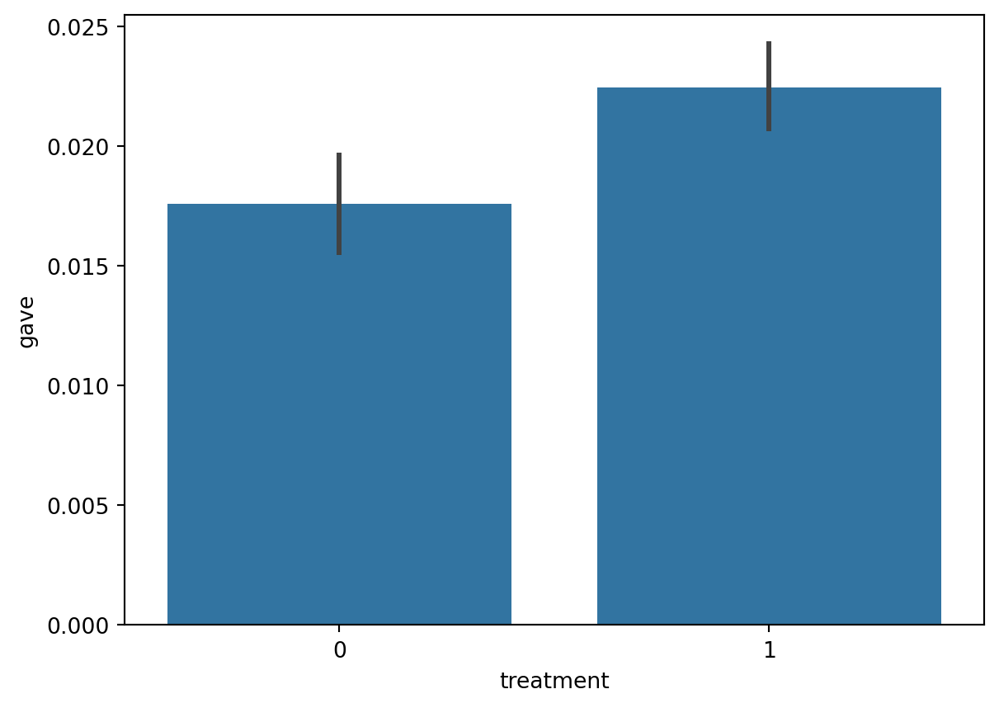
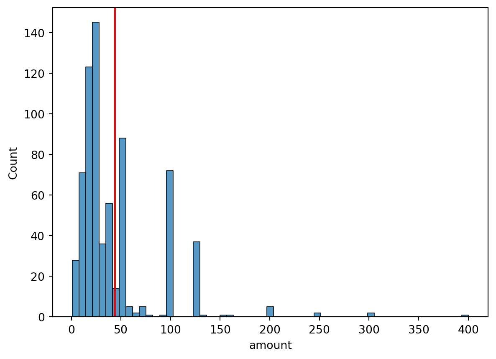
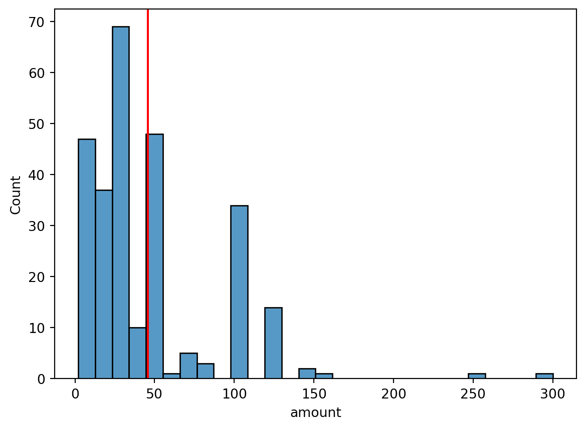
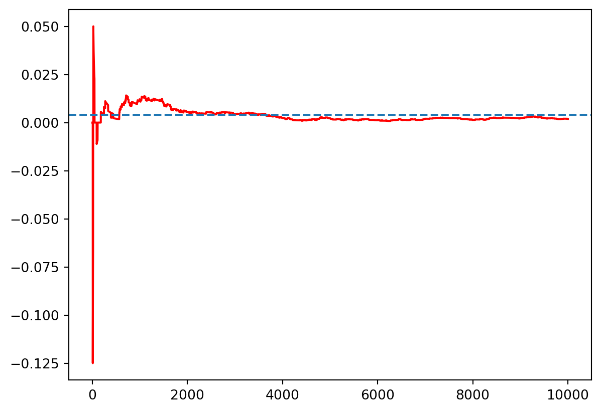

Dean Karlan at Yale and John List at the University of Chicago conducted a field experiment to test the effectiveness of different fundraising letters. They sent out 50,000 fundraising letters to potential donors, randomly assigning each letter to one of three treatments: a standard letter, a matching grant letter, or a challenge grant letter. They published the results of this experiment in the American Economic Review in 2007. The article and supporting data are available from the AEA website and from Innovations for Poverty Action as part of Harvard’s Dataverse.
This project seeks to replicate their results.
Data
Description
import pandas as pdimport numpy as npdata = pd.read_stata('karlan_list_2007.dta')data.describe()# print(np.sum(data['treatment']==1))# print(np.sum(data['control']==0))
treatment
control
ratio2
ratio3
size25
size50
size100
sizeno
askd1
askd2
...
redcty
bluecty
pwhite
pblack
page18_39
ave_hh_sz
median_hhincome
powner
psch_atlstba
pop_propurban
count
50083.000000
50083.000000
50083.000000
50083.000000
50083.000000
50083.000000
50083.000000
50083.000000
50083.000000
50083.000000
...
49978.000000
49978.000000
48217.000000
48047.000000
48217.000000
48221.000000
48209.000000
48214.000000
48215.000000
48217.000000
mean
0.666813
0.333187
0.222311
0.222211
0.166723
0.166623
0.166723
0.166743
0.222311
0.222291
...
0.510245
0.488715
0.819599
0.086710
0.321694
2.429012
54815.700533
0.669418
0.391661
0.871968
std
0.471357
0.471357
0.415803
0.415736
0.372732
0.372643
0.372732
0.372750
0.415803
0.415790
...
0.499900
0.499878
0.168560
0.135868
0.103039
0.378105
22027.316665
0.193405
0.186599
0.258633
min
0.000000
0.000000
0.000000
0.000000
0.000000
0.000000
0.000000
0.000000
0.000000
0.000000
...
0.000000
0.000000
0.009418
0.000000
0.000000
0.000000
5000.000000
0.000000
0.000000
0.000000
25%
0.000000
0.000000
0.000000
0.000000
0.000000
0.000000
0.000000
0.000000
0.000000
0.000000
...
0.000000
0.000000
0.755845
0.014729
0.258311
2.210000
39181.000000
0.560222
0.235647
0.884929
50%
1.000000
0.000000
0.000000
0.000000
0.000000
0.000000
0.000000
0.000000
0.000000
0.000000
...
1.000000
0.000000
0.872797
0.036554
0.305534
2.440000
50673.000000
0.712296
0.373744
1.000000
75%
1.000000
1.000000
0.000000
0.000000
0.000000
0.000000
0.000000
0.000000
0.000000
0.000000
...
1.000000
1.000000
0.938827
0.090882
0.369132
2.660000
66005.000000
0.816798
0.530036
1.000000
max
1.000000
1.000000
1.000000
1.000000
1.000000
1.000000
1.000000
1.000000
1.000000
1.000000
...
1.000000
1.000000
1.000000
0.989622
0.997544
5.270000
200001.000000
1.000000
1.000000
1.000000
8 rows × 48 columns
Variable Definitions
Variable
Description
treatment
Treatment
control
Control
ratio
Match ratio
ratio2
2:1 match ratio
ratio3
3:1 match ratio
size
Match threshold
size25
$25,000 match threshold
size50
$50,000 match threshold
size100
$100,000 match threshold
sizeno
Unstated match threshold
ask
Suggested donation amount
askd1
Suggested donation was highest previous contribution
askd2
Suggested donation was 1.25 x highest previous contribution
askd3
Suggested donation was 1.50 x highest previous contribution
ask1
Highest previous contribution (for suggestion)
ask2
1.25 x highest previous contribution (for suggestion)
ask3
1.50 x highest previous contribution (for suggestion)
amount
Dollars given
gave
Gave anything
amountchange
Change in amount given
hpa
Highest previous contribution
ltmedmra
Small prior donor: last gift was less than median $35
freq
Number of prior donations
years
Number of years since initial donation
year5
At least 5 years since initial donation
mrm2
Number of months since last donation
dormant
Already donated in 2005
female
Female
couple
Couple
state50one
State tag: 1 for one observation of each of 50 states; 0 otherwise
nonlit
Nonlitigation
cases
Court cases from state in 2004-5 in which organization was involved
statecnt
Percent of sample from state
stateresponse
Proportion of sample from the state who gave
stateresponset
Proportion of treated sample from the state who gave
stateresponsec
Proportion of control sample from the state who gave
As an ad hoc test of the randomization mechanism, I provide a series of tests that compare aspects of the treatment and control groups to assess whether they are statistically significantly different from one another.
Experimental Results
Charitable Contribution Made
First, I analyze whether matched donations lead to an increased response rate of making a donation.
import seaborn as sns sns.barplot(data = data, x='treatment', y ='gave', estimator='mean')

p1= data[data['treatment']==1]['gave'].mean()p2= data[data['treatment']==0]['gave'].mean()n1= data[data['treatment']==1]['gave'].count()n2= data[data['treatment']==0]['gave'].count()se= np.sqrt((p1*(1-p1)/n1+(p2*(1-p2))/n2))t= (p1-p2)/seimport scipy.stats as statsstats.ttest_ind(a=data[data['treatment']==1]['gave'],b=data[data['treatment']==0]['gave'],equal_var=False)
Notes: [1] Standard Errors assume that the covariance matrix of the errors is correctly specified.
Compared to the treaemt and the control
todo: Calculate the response rate difference between the 1:1 and 2:1 match ratios and the 2:1 and 3:1 ratios. Do this directly from the data, and do it by computing the differences in the fitted coefficients of the previous regression. what do you conclude regarding the effectiveness of different sizes of matched donations?
In this subsection, I analyze the effect of the size of matched donation on the size of the charitable contribution.
todo: Calculate a t-test or run a bivariate linear regression of the donation amount on the treatment status. What do we learn from doing this analysis?
Notes: [1] Standard Errors assume that the covariance matrix of the errors is correctly specified.
we learn treatmetn increasess doantion aount
todo: now limit the data to just people who made a donation and repeat the previous analysis. This regression allows you to analyze how much respondents donate conditional on donating some positive amount. Interpret the regression coefficients – what did we learn? Does the treatment coefficient have a causal interpretation?
Notes: [1] Standard Errors assume that the covariance matrix of the errors is correctly specified.
Increasse the prob but if you were to give, the amoutn would be lower
todo: Make two plot: one for the treatment group and one for the control. Each plot should be a histogram of the donation amounts only among people who donated. Add a red vertical bar or some other annotation to indicate the sample average for each plot.
import matplotlib.pyplot as plt treat = data3[data3['treatment']==1]control = data3[data3['treatment']==0]sns.histplot(treat, x ='amount')plt.axvline(x = treat['amount'].mean(), color ='r')

sns.histplot(control, x ='amount')plt.axvline(x = control['amount'].mean(), color ='r')

Simulation Experiment
As a reminder of how the t-statistic “works,” in this section I use simulation to demonstrate the Law of Large Numbers and the Central Limit Theorem.
Suppose the true distribution of respondents who do not get a charitable donation match is Bernoulli with probability p=0.018 that a donation is made.
Further suppose that the true distribution of respondents who do get a charitable donation match of any size is Bernoulli with probability p=0.022 that a donation is made.
Law of Large Numbers
to do: Make a plot like those on slide 43 from our first class and explain the plot to the reader. To do this, you will simulate 100,00 draws from the control distribution and 10,000 draws from the treatment distribution. You’ll then calculate a vector of 10,000 differences, and then you’ll plot the cumulative average of that vector of differences. Comment on whether the cumulative average approaches the true difference in means.
control = stats.bernoulli.rvs(0.018, size =10000)treat = stats.bernoulli.rvs(0.022, size =10000)diff = treat - control cumm_mean = np.cumsum(diff)/np.arange(1, 10001)sns.lineplot(cumm_mean, color ='r')plt.axhline(y =0.004, linestyle ='--' )

Central Limit Theorem
to do: Make 4 histograms like those on slide 44 from our first class at sample sizes 50, 200, 500, and 1000 and explain these plots to the reader. To do this for a sample size of e.g. 50, take 50 draws from each of the control and treatment distributions, and calculate the average difference between those draws. Then repeat that process 999 more times so that you have 1000 averages. Plot the histogram of those averages. Comment on whether zero is in the “middle” of the distribution or whether it’s in the “tail.”